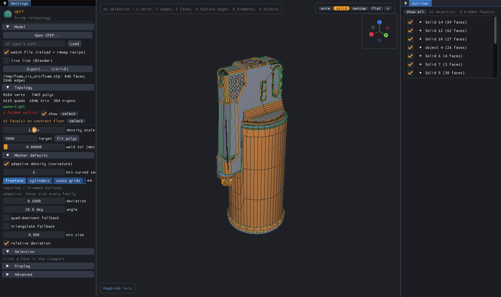
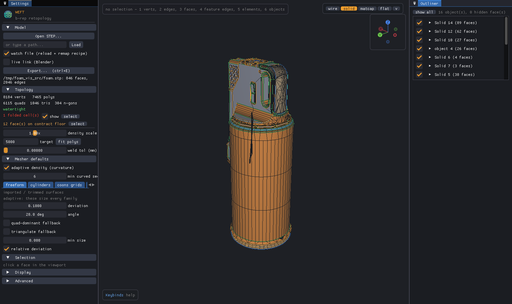
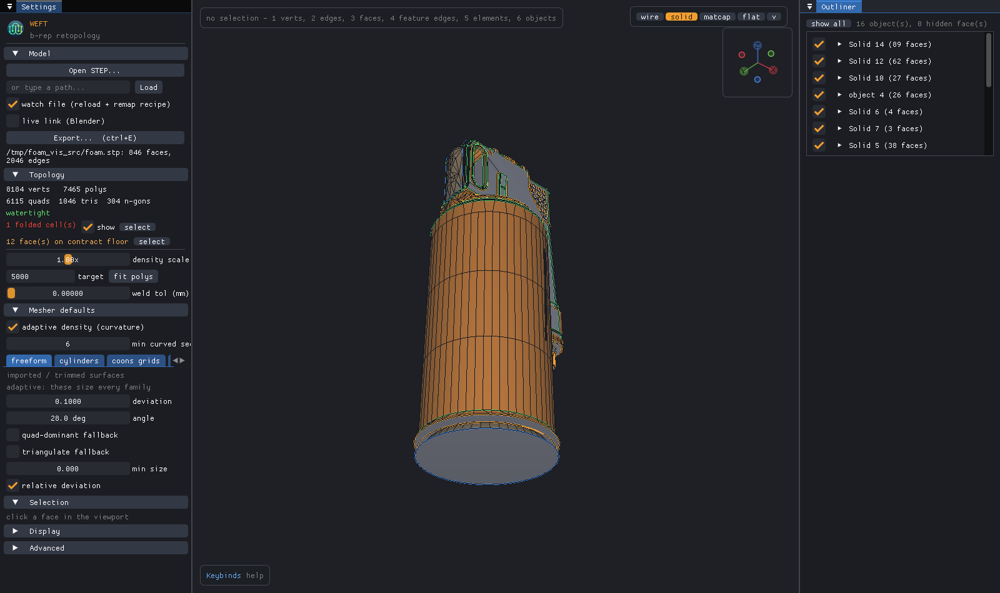

8184 vertices, 7465 polygons (6115 quads, 1046 tris, 304 n-gons) 1 folded polygon(s); worst faces: #183(1) watertight: yes (open edges: 0, non-manifold: 0) degenerate: 3 polygons, 261 slivers (< 5.0 deg)


